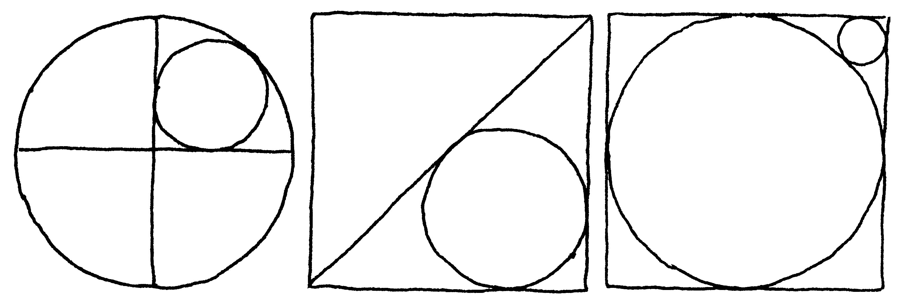
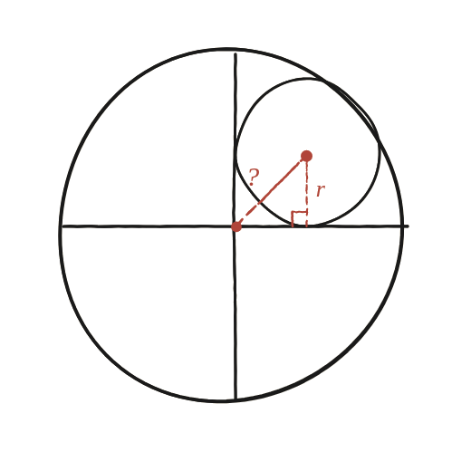

Quant fan aquestes circumferències?

Tres puzles, una sola idea
L'enunciat en planteja tres de cop: un cercle gran tallat pels seus dos diàmetres amb un cercle petit encaixat en un dels quatre racons; un quadrat amb una diagonal i un cercle inscrit tocant-la; i un quadrat amb un cercle gran inscrit i un de petit encaixat en una cantonada. Tots tres es resolen amb la mateixa palanca de la Qüestió 22 —dir la mateixa distància de dues maneres—, encara que la posin en pràctica de manera lleugerament diferent cada vegada.
El primer puzle: quins segments fan de catets, ara
A q22, els dos catets del triangle rectangle eren tots dos R (radis del cercle gran). Aquí la situació canvia: el cercle petit toca els dos diàmetres del cercle gran, no un altre cercle. Com que el seu centre és tangent a totes dues rectes, aquest centre queda a distància r —el seu propi radi— de cadascun dels dos diàmetres. Els dos catets del triangle rectangle amagat ja no fan R: fan r tots dos.

La mateixa hipotenusa, dita de dues maneres
La hipotenusa d'aquest triangle és la distància entre el centre del cercle gran i el centre del cercle petit. Per Pitàgores, amb els dos catets r: hipotenusa = r√2. Per la tangència —ara interior, un cercle petit dins d'un de gran, no dos cercles costat per costat— aquesta mateixa distància val R−r (el radi gran menys el radi petit, no la suma). Igualant-les: r√2 = R−r, d'on r(√2+1) = R, i per tant r = R/(√2+1) = R(√2−1).
Els altres dos puzles: la mateixa tècnica, un altre tipus de tangència
Els altres dos puzles del dibuix es resolen amb exactament la mateixa idea de fons —un triangle rectangle amagat entre centres, i la mateixa distància dita de dues maneres— però la "tangència" que fa de segona expressió no és sempre amb un altre cercle. En el puzle del quadrat amb la diagonal, la tangència és amb una recta (la diagonal), i llavors la distància d'un punt a una recta és la que fa d'hipotenusa —una eina diferent de la suma o resta de radis, però que juga exactament el mateix paper a l'equació final. Val la pena intentar-los amb aquesta mateixa palanca abans de continuar.
Pel primer puzle: r = R(√2−1), el mateix valor que a q22, obtingut amb la mateixa tècnica (Pitàgores contra tangència) però amb catets r en lloc de R, perquè aquí el cercle petit toca dues rectes (els diàmetres) en lloc d'un altre cercle. Els altres dos puzles reutilitzen la mateixa palanca, substituint la tangència entre cercles per la distància d'un punt a una recta quan calgui.
Comprovació
Amb R=1: r=√2−1≈0,414 —exactament el mateix valor numèric que a q22, encara que la figura sigui completament diferent. Compte a no dir-ne massa de pressa «és la mateixa equació»: no ho és. A q22 l'equació era R√2=R+r (tangència exterior, catets R); aquí és r√2=R−r (tangència interior, catets r). Són equacions diferents que resolen a la mateixa raó, i el motiu és una identitat que val la pena veure: de la primera surt r/R=√2−1, de la segona r/R=1/(√2+1), i aquests dos números coincideixen perquè (√2−1)(√2+1)=2−1=1.